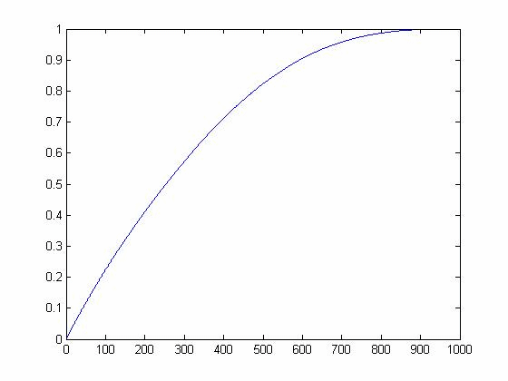

| DiscreteWavelets Toolbox |
Select a number of elements from a cumulative energy vector
n = nCE(v,p)
n=nCE(v,p) takes as input vector v and a number p and returns the number of elements in v that are less than or equal to p.
The elements of v and p must be in the interval [0,1].
The value n returned by nCE can be used with the Comp function to perform naive compression.
Create a vector and plot it and its cumulative energy. The commands
x=0:.001:.999; %Sample points
v=sin(2*pi*x)+.15*rand(1,1000); %Create a noisy vector
y=CE(v); %Compute the cumulative energy
plot(y); %Plot the cumulative energy
n=nCE(y,.6); %Find the number of elements that comprise 60% of the energy in v
str=sprintf('The %i largest elements in v comprise 60%% of the energy in v.',n);
disp(str);
produces
The 318 largest elements in v comprise 60% of the energy in v.
© 2007-2008 Patrick Van Fleet